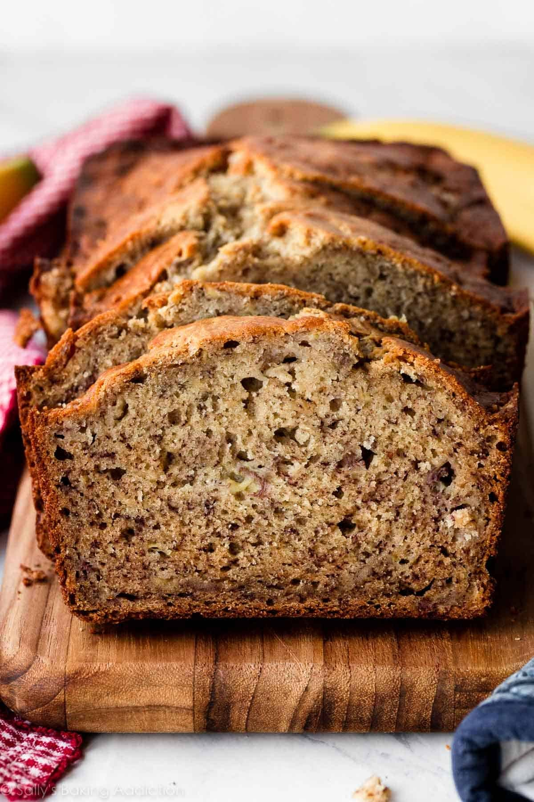
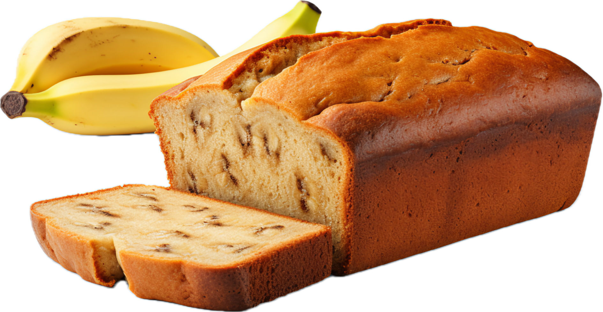
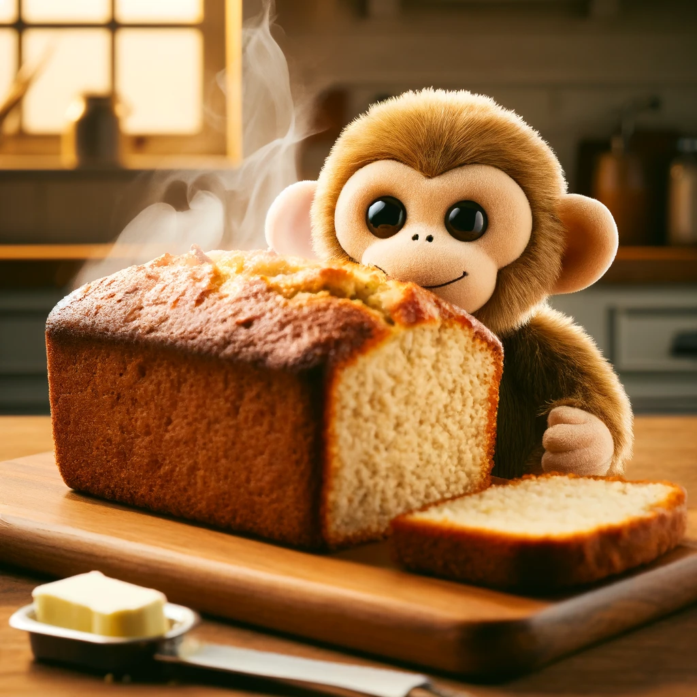

My banana bread recipe By Morgan
Introduction
This is an easy banana bread recipe that requires minimal ingredients. Overall, the recipe creates a small loaf of delicious banana bread, which is inspired by this recipe by Shelley Albeluhn. The baking time is around 50 minutes to 1 hour because of the thickness of the loaf, and the total time this recipe will take is around 1 hour and 20 minutes, including prep time, baking time and time for cooling in the pan before taking it out. This is one of my favorite things to bake because of how delicious the banana bread is. I also like this recipe because the steps are very easy to follow and it doesn't require too many ingredients.
Ingredients
- 2 ⅓ mashed overripe bananas
- 2 cups of all-purpose flour
- ¾ cups of brown sugar
- 2 large eggs
- ½ cup of butter
- ¼ teaspoon of salt
- 1 teaspoon of baking soda


Instructions
- Preheat oven to 350°F and grease a small loaf pan (around 22 cm by 12 cm by 8 cm)
- Combine flour, salt and baking soda in a large bowl.
- Mix brown sugar and melted butter in a separate bowl; once smooth, add eggs and mashed bananas and stir until fully combined.
- Stir the wet mixture (brown sugar, eggs, butter and banana mixture) into the dry mixture (flour, salt and baking soda mixture) until both reunite into a combined mixture.
- Pour the batter into your greased pan.
- Put into the preheated oven and bake for around 50 minutes to an hour (check by inserting a toothpick into the center and seeing if it comes out clean).
- Let the banana bread cool in the pan for around 10 minutes, then take it out of the pan and let it cool completely.
- Once cooled, slice it with a knife and enjoy.
Enjoy!
